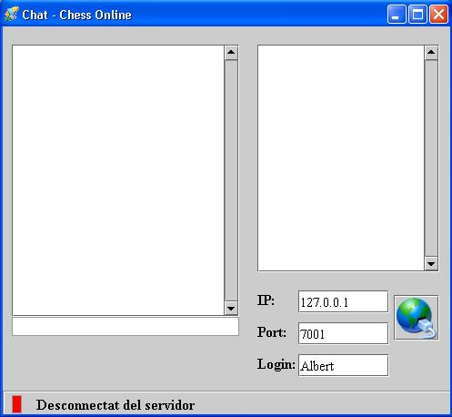

|
Al premer la pestanya de Chat obtenim la següent interfície:  A l'esquerra tenim la llista dels missatges, a la dreta els diferents usuaris connectats al chat i a la part inferior les dades per connectar-se al servidor. El servidor on ens connectem no ha de perquè ser el mateix on estem jugant. Podem tenir tantes connexions al Chat com volguem, i el login que introduïm pot ser qualsevol. Les restriccions que hi ha alhora de connectar-se són que el login no estigui connectat al chat i que tingui menys de 10 caràcters.
|